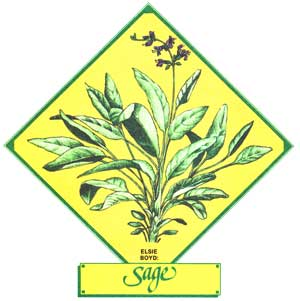

Lately, more and more people have begun to understand just how limited-in both variety and nutritional value our"modern" diets hove become. This realization has sparked a new and widespread interest in the culinary and therapeutic uses of herbs ... those plants which - although not wellknown today-were, just one short generation ago, honored "guests" on the dinner tables and in the medicine chests of our grandparents' homes. In this regular feature, MOTHER examines the availability, cultivation, and benefits of our "forgotten" vegetable foods and remedies. . . and-we hope-helps prevent the loss of still another bit of ancestral lore.
The sage plant-an herb of the Labiatae (mint) family and the genus Salvia (and thus not to be confused with the range sage of the western U.S., which is a species of the genus Arternisla)-is commonly grown as a garden plant. Few people know, however, that there are a number of reasons why it's actually better to grow this pretty and pungent herb on a windowsill, indoors!
For one thing, a sage houseplant-which doesn't encounter the kind of cold nights and chilly, rainy days that can retard growth -will mature quickly and produce tender, delicately flavored leaves.
Furthermore, since sage is an evergreen perennial, such plants will last for a number of years In indoor containers ... where they're not likely to be disturbed or destroyed, as often happens when the herbs are grown in a garden that's plowed each spring. (Sage plants, by the way, were once thought to be barometers of success: As they thrived or withered, it was believed, so would their owner's business.)
If you decide to raise this magnificent mint indoors, just plant several seeds in a five- to six-inch pot (I use plastic containers, as they tend to hold moisture longer than do clay pots). Then, once the sage has sprouted, thin It back to one or two seedlings In each container.
Fairly rich soil is necessary to produce healthy herbs (a little rotted manure or compost mixed with any good dirt is fine), and the potted plants should be placed on a sunny windowsill. After the sage shoots are at least four inches high, enrich their water now and then with a good liquid plant fertilizer ... used according to the directions on its label.
During the spring of its second year (and thereafter), sage will produce small, bluish-white flowers on the end of each branch. Simply pinch the blooms off as soon as they appear, In order to prevent seed formation which might interfere with the little shrub's luxuriant and lovely leaf growth.
After the plants have reached maturity, they may be harvested as often as three or four times a year. To do this, cut the longer leaf stems back to about six inches and leave the little central shoots intact. (When shorn, the herb may look a trifle sad for a short time, but just give it a feeding of fertilizer and place it on a south or west windowsill ... and, in a few months, you'll find it's ready to be harvested again.)
Next-with small shears-snip the gathered leaves from the severed branches, discard the stems, and spread the greenery thinly on cloth or paper in a subdued light. When the leaves are crispy dry, store 'em (whole or crushed) In a container that will keep out both light and air.
The taste of many a batch of stuffing, bowl of soup, and patty of sausage can be enhanced by the addition of a pinch or two of this ancient, aromatic herb. And the Chinese liked sage tea so much that they used to trade the Dutch three pounds of their own famous green tea brewing leaves for one pound of sage!
EDITOR'S NOTE.
For information on the many benefits of bathing in sage-scented water, see "Healthful Herbal Baths."
|
 |
|
|